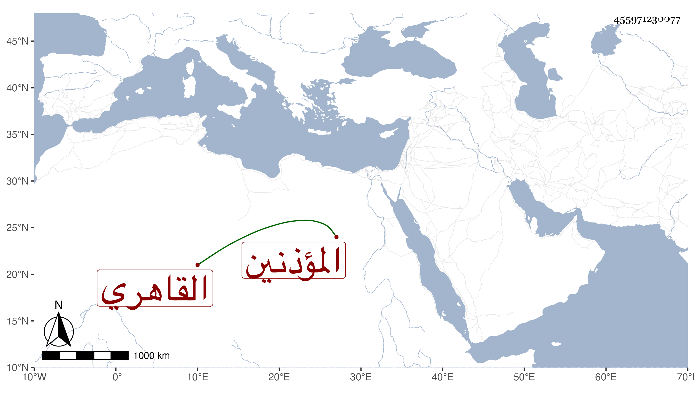

0902Sakhawi.DawLamic.ITO20230111-ara1.EIS1600.455971230077
Biography ID: 455971230077
1019
محمد بن أحمد بن خلد الشمس القاهري أحد المؤذنين للسلطان ويعرف بابن خلد . ولد في خامس عشري ذي الحجة سنة اثنتي عشرة وثمانمائة وحفظ القرآن وتنزل في الجهات كالجانبكية والصرغتمشية والشيخونية والبيمارستان والحسنية وجامع المارداني وصار وجيها ساكنا يتقلد لأبي حنيفة ويحضر وظائفه مع حشمة وذكر بثروة وقلة مصروف وهو ممن كان يكثر الحضور عندي بالصرغتمشية وأظنه كان يدري الميقات ويجلس أحيانا في بعض مراكز الشهود . مات في أواخر رجب سنة تسع وثمانين رحمه الله وإيانا .
